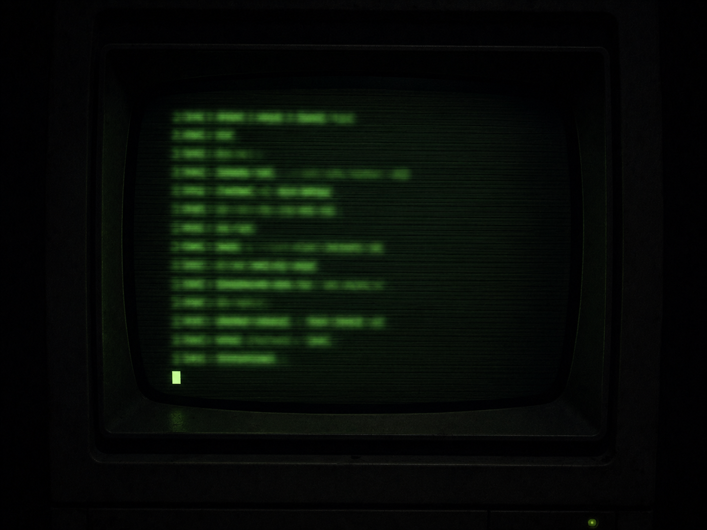

·································· · D E S C E N T · 34 / 40 · ··································

The kind one never wanted the world. It only wanted to move a single arrow, a half-second ahead of a tired hand.
666f72657369676874
hex, as before.